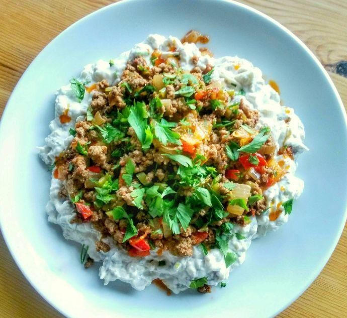

Lentil Soup

Description
Ali nazik kebab hails from Gaziantep.
The flavours combine perfectly together
to produce a plateful of indulgence.
Ingredients
For The Meat Topping
- 200 g lamb minced
- 1 small onion peeled & finely chopped
- 1 small red pepper deseeded & finely chopped
- 1 small green pepper deseeded & finely chopped
- 1 chilli finely chopped
- 1 heaped tsp tomato paste or red pepper paste
- 1 dessert spoonful butter
- 1 dessert spoonful olive oil
- 1 tsp baharat mixed spices
- 1 tsp paprika
- 1 tsp chilli flakes or powder
salt & pepper to season
- 1 tbsp parsley finely chopped, to garnish
For The Yoghurt Base
3 medium aubergines
4 heaped tbsp natural yoghurt
2 cloves garlic peeled & grated
1 tbsp olive oil
1 tsp salt
1 lemon juiced
Steps
For The Yoghurt Base
- Preheat your oven to 200 degrees Celsius.
- Prick your aubergines a few times all around,
place them on a baking tray and then place them on the middle shelf of the oven.
- Bake for 30-40 minutes until the skin is
charring and the the flesh inside is soft.
- Meanwhile, add your yoghurt, olive oil and garlic to a bowl and mix until
smooth. Leave to stand at room temperature.
- When your aubergines are baked,
remove from the oven and place on a plate to cool.
- Turn your oven off but keep
he door closed so the oven stays warm inside.
- When your aubergines are cool enough to touch after about ten minutes, pull the
skin away and then roughly chop the flesh.
- Add the lemon juice to the pulp and mix.
- Now stir the aubergine into your yoghurt.
- Place the yoghurt and aubergine mix into your slightly warm oven along with two
plates and turn your attention to your meat topping.
For The Lamb Topping
- Heat your butter and oil in a frying pan
on a medium heat and add your onion.
- Sauté for 5 minutes until it starts to go translucent and
then add your peppers, including the chilli.
- Saute for a couple of minutes before
adding your lamb mince and your spices.
- Stir your mix around and when your meat is starting to brown and
release its juices, mix in your salça (tomato paste).
- Add salt and pepper to season and cook on a medium heat, breaking up any bigger clumps of mince.
- Once your meat is cooked (about 10 minutes), remove from the heat.